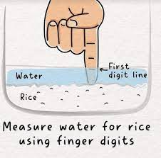

Garlic Butter Rice

Garlic Butter Rice is a nice side dish to compleme Chicken Tikka Masala and other entrees
Ingrediants
- 2 C of rice
- 2 Tbls butter
- 3 crushed garlic cloves
- 1 finger (your personal finger attached to your hand will do just fine. If you find yourself with no fingers to use, use a friends finger)
Instructions
- Rinse rice and place in pot
- Fill pot with water till the water is one digit line above the rice (see picture below)
- Place the butter and garlic on the pot, cover on high heat
- Once you see steam escaping from under the lid (this means the water is boiling without having to lift the lid), turn the heat to low for 20 minutes
- Fluff rice with a spatula soon after removing from heat
